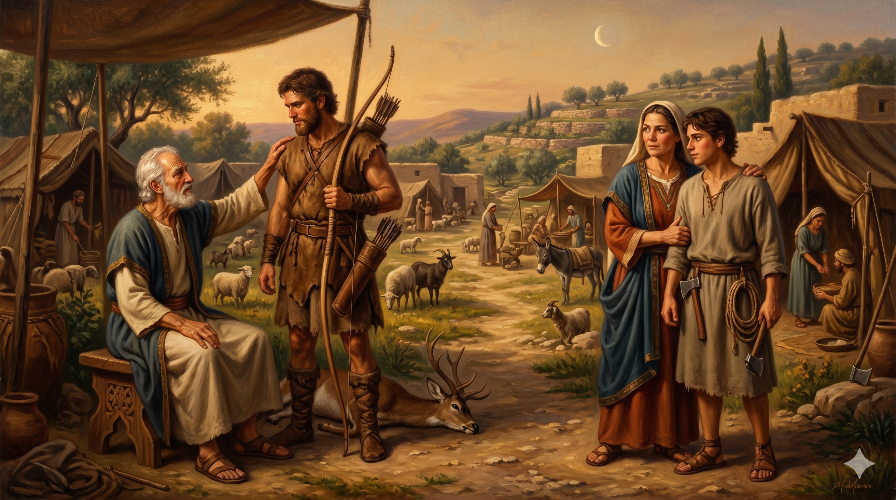

들에서 돌아온 에서에게 팥죽 한 그릇과 장자권을 거래하는 야곱 — 순간의 허기가 영원한 유업을 결정하는 장면
야곱이 이르되 형의 장자의 명분을 오늘 내게 팔라 에서가 이르되 내가 죽게 되었으니 이 장자의 명분이 내게 무엇이 유익하리요 야곱이 이르되 오늘 내게 맹세하라 에서가 맹세하고 장자의 명분을 야곱에게 판지라 야곱이 떡과 팥죽을 에서에게 주매 에서가 먹으며 마시고 일어나 갔으니 에서가 장자의 명분을 가볍게 여김이었더라 — 창세기 25:31–34
이삭의 두 아들 에서와 야곱은 태어날 때부터 서로 달랐습니다. 에서는 거칠고 활달한 들사람으로 아버지 이삭의 사랑을 받았고, 야곱은 조용하고 꼼꼼한 성격으로 어머니 리브가의 편애를 받았습니다. 이 편애의 구도는 이삭 가정의 균열을 예고하는 씨앗이었습니다. 부모가 자녀를 차별하여 사랑할 때 가정 안에 어떤 갈등과 비극이 생겨나는지를 이 이야기는 생생하게 보여줍니다. 하나님은 이미 태중에서 "큰 자가 어린 자를 섬기리라" 하셨지만, 그것이 인간의 불순한 방법을 정당화하지는 않습니다.
에서가 "내가 죽게 되었으니"라고 말한 것은 단순한 과장이었습니다. 사실 그는 생명의 위협을 받은 것이 아니라 허기를 느꼈을 뿐입니다. 순간의 허기가 얼마나 컸든, 장자권은 단순한 빵 한 조각과 비교할 수 없는 엄청난 영적 유산이었습니다. 장자의 명분은 약속의 계승자로서 하나님의 언약 공동체에서 갖는 지위와 책임을 의미했습니다. 에서는 그 가치를 "가볍게 여겼습니다." 야곱의 간계도 문제이지만, 히브리서는 에서를 "한 그릇 음식을 위하여 장자의 명분을 판 망령된 자"(히 12:16)라고 평가합니다. 눈앞의 만족을 위해 하나님이 주신 귀한 것을 포기하는 것, 그것이 에서의 진짜 실수였습니다.

이삭은 에서를, 리브가는 야곱을 편애했던 이삭 가정의 풍경 — 편애가 만들어 낸 균열의 시작
에서의 이야기는 우리 안의 "지금 당장" 하는 욕구를 성찰하게 합니다. 우리는 종종 눈앞의 편안함, 즐거움, 이익을 위해 장기적으로 중요한 것들을 타협하거나 포기합니다. 신앙 생활을 뒤로 미루는 것, 가족과의 시간보다 일을 우선시하는 것, 유혹 앞에서 쉽게 무너지는 것 — 이 모든 것이 작은 "팥죽 한 그릇"에 영원한 유산을 파는 행위일 수 있습니다. 에서의 실수는 큰 죄악이 아니라 단지 영적인 무감각이었습니다.
이삭 가정의 편애는 부모 된 우리에게도 깊은 도전을 줍니다. 이삭과 리브가는 각각 자기가 좋아하는 아이에게 애정을 쏟았습니다. 그 결과 두 아들은 경쟁과 갈등 속에 자라났고, 결국 가정은 파탄 직전에 이르렀습니다. 자녀에게 주는 가장 큰 유산은 재물이나 편애가 아니라 공평하고 따뜻한 사랑입니다. 그리고 우리 자신도 하나님이 주신 영적 유산 — 기도, 말씀, 신앙 공동체 — 을 얼마나 소중히 여기고 있는지 돌아보아야 합니다.
에서는 배가 고팠습니다. 그 허기가 장자권보다 더 실감났습니다 — 당신이 지금 가장 실감하는 것은 무엇입니까?
눈앞의 팥죽 한 그릇을 위해 당신이 포기하려는 영원한 것이 있지는 않습니까?
하나님이 당신에게 주신 귀한 유산을 오늘 다시 한번 소중히 여기십시오.
"망령된 자가 되지 말고" — 지금 이 순간의 선택이 영원을 결정합니다.